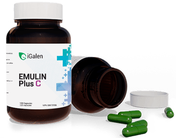

<div class="views">
    <div class="view view-main">

        <div class="pages navbar-fixed">
            <div class="page">

                <div class="navbar">
                    <div class="navbar-inner">
                        <div class="left"><a href="#" class="open-panel link icon-only"><i class="material-icons">menu</i></a></div>
                        <div class="center">Emulin+™</div>
                    </div>
                </div>

                <div class="page-content">
                    <div class="list-block">
                        <div class="container">
                            <h4>EMULIN+™ M is for MAINTENANCE</h4>
                            <div class="img-cont">
                                
                            </div>
                            <p>
                                Its all natural vegan formula contains a patented formula of grape skin, onion skin, & green coffee bean. Designed for people that are relatively healthy with minimal to mild inflammation in need of assistance with the distribution of sugars & carbs that they are consuming on a healthy diet.
                            </p>
                            <h4>EMULIN+™ C is for CONTROL</h4>
                            <div class="img-cont">
                                
                            </div>
                            <p>
                                This formula still consists of the same 3 natural ingredients but in a stronger formulation created specifically for diabetics & people that consume a lot of refined sugars & carbs that may also have severe inflammation resulting in chronic pain, diabetes, MS, fibromyalgia, obesity, lethargy.
                            </p>
                            <h3>1st process:</h3>
                            <p>
                                It inhibits, in your mouth, the change of starch to simple sugars. Once we slow that process down, there is not as much free sugar to be absorbed into your body simply because your body cannot absorb straight starch without it being broken down into simple sugars.
                            </p>
                            <h3>2nd process:</h3>
                            <p>
                                In the lining of your gut, stomach and intestines, there are little doorways that open up for the simple sugars to enter into the bloodstream Emulin+™ is able to slow down that process as well, closing not all, but some of the doors permanently. Once sugar is inside the bloodstream it has to decide where to go, that is the job of insulin… Is this sugar going into fat tissue, brain or muscle tissue? There is a component in Emulin+™ that helps guide/chaperone this sugar to the muscle tissue and to the doorways of the brain keeping it out of fat tissue. Not only does it stop the sugar from getting into the fat tissue, it also prevents the development of fat tissue.
                            </p>
                            <h3>3rd process:</h3>
                            <p>
                                Emulin+™ causes glucose to leak back out of fat tissue, which is why so many people report losing weight.
                            </p>
                            <p>
                                If  upon waking, you tried to lower your blood glucose levels just by reducing the amount of sugar that you consume in a day you would be unsuccessful because your body has an automatic response to bring its levels back to where it is most used to them being each morning. So even if you are consuming less sugar your body will create new sugars to maintain the levels it is used to.
                            </p>
                            <p>
                                One of the components in Emulin+™  called gluconeogenesis (GNG) slows that process down. That by the way, is the same way Metformin works, the world’s most popular drug for type 2 diabetes.
                            </p>
                            <p>
                                Lastly, Emulin+™ causes an increase in insulin sensitivity. Type 2 diabetic have insulin in their body which it’s just not working, it’s either not opening those doorways or those doorways just don’t show up, but by taking the components in Emulin+™  in the presence of insulin those doorways to open up
                            </p>
                            <div style="width: 100%; text-align: center;">
                                
                            </div>
                            <h4>Managing inflammation naturally…</h4>
                            <h3 style="text-align: center;">
                                EMULIN® was discovered by Daryl Thompson, a food and bio-chemist, and Dr. Joseph Ahrens, former director of research for the Florida Department of Citrus, by studying the use of grapefruit in weight loss and improving other metabolic outcomes like control of blood sugar and blood fats (cholesterol and triglycerides).
                            </h3>
                            <h3 style="text-align: center;">
                                Dr. Ahrens and Dr. Thompson identified three phytochemicals that emulated insulin (hence, the name Emulin®) at various key enzymatic control points that increase insulin sensitivity.
                            </h3>
                            <h4 style="text-align: justify;">
                                These compounds have been left out in our modern day diets as we processed and refined our food. The three actives of Emulin® work together to protect your body and manage the ill effects of any excess carbs consumed.
                            </h4>
                            <h3>
                                What Emulin+ Tackles
                            </h3>
                            <h4>Inflammation</h4>
                            <p>
                                Inflammation is the activation of the immune system in response to infection, irritation, or injury. Short term (acute) inflammation is useful for the body. Long-term (chronic) inflammation can cause other diseases. Some of them can be life threatening such as heart disease, diabetes, cancer and more. Excessive consumption of refined carbohydrate can lead to inflammation.
                            </p>
                            <h4>Carbohydrates</h4>
                            <p>
                                Refined carbohydrates are carbohydrates that are processed to make them even more consumer-friendly and easier to store. These carbohydrates have been stripped of most – if not all – of their nutrients and fiber. That is why they are referred to as “empty calories.” These type of food deplete your body of its vitamins and minerals during the digestion process. Even much worse, they will cause your blood sugar to rise rapidly.
                            </p>
                        </div>
                    </div>
                </div>
            </div>
        </div>
    </div>
</div>